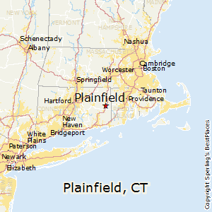

I was born in December of the year 2000. The name Jake Barker was given to me by my parents, Jill and Jim Barker. I grew up in Plainfield C.T. and have never left. I played sports, did well in school, and made some good memories with friends. I found out that computers are a passion of mine and figured I gotta find something to do that will be beneficial to me in life. I decided to further my education with networks and computers with a few COVID hiccups.
